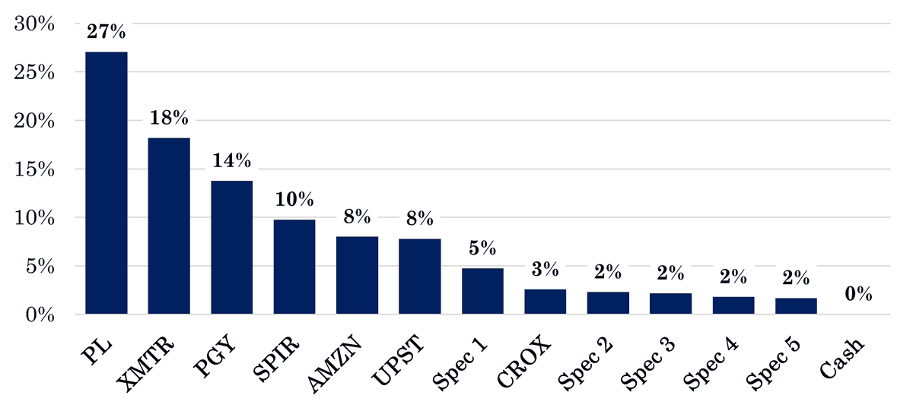

2024 Annual Letter
This letter is the start of a series that will over time document my investment track record. My goal for this first edition is mainly to provide some context about who I am and how I invest. I’ll introduce my situation, my philosophy, and share a bit about how I interpret strategy and risk.
Regular readers might think I’m beating a dead horse, but I think there is nothing more important than context in any discussion of investing. Context can eliminate misunderstandings and explain why someone thinks a certain way. Too many people don’t bother to ask why.
This letter closes with my historical returns and current portfolio. As always, I encourage you to share your own opinions in the comments, particularly if constructive.
My Situation
Since I was a kid, my interests have always been more accurately classified as obsessions. I either want to spend all my time doing something or none of it. Investing is no different, though I don’t work in the investment business.
I’m 24 years old. Most of my funds are in a Roth IRA, so my time horizon is effectively infinite. I’ve been investing my money for around seven years, but really focusing on it for the last three or four.
In that time, my approach has undergone some drastic changes. I started off trading, did a tour of duty in the traditional value trenches, went after high-growth tech stocks, and eventually indexed a sizable chunk of my portfolio for a while. This experimentation has been invaluable in learning about my behavior in markets and developing an approach suited to my personality.
I invest a small sum of money today compared to what I expect to earn and save over the course of my career. Partly because of this, I’m comfortable with concentration. If losing money steepens the learning curve, that’s a tradeoff I’m willing to make – provided I avoid repeating any mistakes.
Investing is a game – one I enjoy very much. I play to win, but winning is not just about beating the market. It’s about learning and having fun with the process. The day I stop learning or the day I stop enjoying the craft is the day I go back to indexing. Hopefully that day is far off.
Philosophy
I view philosophy as a set of principles that guide your approach to the market. It’s virtually impossible to capture my approach in a few pithy phrases, but nonetheless I’ll try:
- Keep it simple
- Think like a business owner
- Hold a long term view
- Look for misunderstandings
Simplicity is an anchoring force in my process. Reece Duca, the founder of IGSB, said it best:
We think that the most important thing in the investment business is to keep everything absolutely as simple as you possibly can. We think complexity is the biggest barrier to high performance in the investment business. And so we design around complexity.
The best investment ideas are simple. They can be explained in a few sentences, and they rely on napkin math, not complex models. Simplicity, to me, is about having a clear endgame in mind. It’s about focusing on the few variables with the most influence on that outcome and separating the rest. Ultimately, it’s about knowing what you own and why you own it.
A business owner focuses on the people, thinks strategically, and doesn’t care for the stock market. Do you trust the people running the business to make decisions in your interest? Have they outlined a strategy which you believe will succeed over time? Can they execute? If so, stock price volatility should be a feature, not a bug, of any investing program.
Holding a long term view can only come from asking long term questions. Josh Tarasoff says:
One kind of investment situation I’m fond of is when a company’s best decade won’t even begin for 5 years or more: the endgame is clear, but there is an immediate murkiness as the pieces fall into place. Instead of focusing on the far future, investors commonly try to construct a narrative or a series of events that will occur over the next few months, quarters, or years — what I call a path. People obsess over the path because they crave the comfort of a play-by-play understanding of how their investment will progress.
Most people don’t bother to ask the long-dated questions because they are too bogged down in what happened last quarter or what might happen next quarter. This short-termism is a plague, and I think operating outside the confines of an investment business largely bound to it provides an edge.
In a game where turning over the most rocks can be a recipe for success, it helps to quickly discard companies not suitable for investment. Searching for misunderstandings is a way to accelerate this filtering process. A misunderstanding often implies lower expectations, which can spell opportunity.
Identifying misunderstandings is not as simple as filtering for low valuation ratios. More often than not, it means focusing intensely on what can’t be readily measured or quantified. It means developing an intuition for how the market thinks, understanding where you differ, and trusting your judgment. The process is far from scientific, but I find it’s a worthwhile endeavor.
If most people seem to have a solid grasp of a company’s business model or competitive advantage, I am quick to turn the page. Many investors approach the market from the opposite angle, studying businesses upfront in order to be ready when the price reaches an attractive level.
My own habits are more in line with Stanley Druckenmiller’s “invest, then investigate.” I prefer to look for situations where I can immediately sense the opportunity and get some skin in the game, then continue my investigation before sizing up or exiting the position.
Position sizing has had a detrimental impact on my performance historically, and my thinking has evolved over time. We will discuss it in depth at a later date as it is one of the most important components of any investment program and deserves more time than I can offer today.
Strategy
Strategy is more tactical than philosophy; it should answer the question of how you plan to beat the market. Strategy cannot be static; it has to evolve and adapt, because markets evolve and adapt. Opportunities shift. What should be constant is an alignment with your temperament and goals.
My strategy is less a product of any conscious decision I made and more a function of where I have noticed opportunity in the last few years, and where I am naturally drawn. It can be tackled from a few angles.
For starters, I have a decent concentration in busted SPACs – companies that went public at too high a valuation and have since been left for dead. A few of these entities just might possess solid business models, good leadership, and promising prospects; it will just take longer than most people expected to justify the exorbitant valuations they were once willing to pay. I wouldn’t describe my strategy as seeking out busted SPACs, but it’s an area where I have seen and acted on opportunity.
Another angle is companies that benefit from inevitable change. Again, this isn’t something I wrote down or decided to do; I am naturally drawn to how industries evolve and fascinated by companies doing something novel or different. I tend to seek out pockets of secular change, invest early in companies leading or shaping that change, and wait. It’s a venture capital-esque strategy.
Yet another angle could be companies building a unique supply of data. AI may be king, but data is God. Companies with (1) massive and (2) unique and (3) valuable datasets should accrue significant value as they begin building platforms and applications that have only become possible with recent developments in the domain. Finding companies in such a position is difficult, but promising.
I liken this angle to “training data as a moat.” The concept itself is experimental and weak – it only really makes sense at the brute force layer of any advantage – but it’s an idea I find myself coming back to often. Maybe it earns more merit over time; for now, the investigation continues.
Time horizon is my only edge, so it will continue to be the unifying factor across the strategies I look to employ. But my point with all of this is that strategy is less something you decide to do and more a reflection of where you see opportunity. I don’t believe in strict rules or pigeon-holing where you search for returns. I do believe in chasing opportunity soberly and rationally, and avoiding hype.
Risk
Risk might be the most diluted concept in all of finance. I nearly went crazy in college calculating VaRs, sharpe ratios, betas – it’s all bullshit. Risk is defined by the dollars you put into an investment and your level of confidence that you will be able to pull them out at your time of choosing, even if things don’t go perfectly according to plan.
There is no science to it. It’s an educated guess. We deal with judgment under uncertainty – that’s the nature of the game.
Risk is also relative. If I were to put 100% of my money into a single company right now, almost everyone would consider that inordinately risky. But, if I started from zero tomorrow, my life would not be impacted to any great degree. Of course I don’t want to do that, but risk ultimately depends on the actor. There’s no universal formula.
In general, I think investors are better off acknowledging the prevailing uncertainty of their craft and managing their activity with that in the forefront of their mind. Our chief objective is to manage ourselves in order to take on risk, rather than attempt to measure that risk with any degree of precision. Acknowledge and understand, but don’t try to quantify.
One tactic I use to manage myself is trying to spot qualities of a business that will make me queasy if things start to turn sideways.
A poor balance sheet is one example. A healthy balance sheet helps me sleep well. This isn’t a hard and fast rule – I’ve stepped out of bounds numerous times (Spire as one example) – but it’s a good frame, particularly when shopping among unprofitable enterprises.
Another tactic is to immediately ask, “what is the probability of a zero?” when assessing a business. I find the question immediately frames the risk assessment in the right way, especially if navigating the mine-ridden fields of former SPACs. My natural tendency is to focus more on understanding what can go right than what can go wrong, and this serves as a gentle balancing mechanism.
Risk is all about how you handle uncertainty. Good risk management is knowing yourself, recognizing the limits of your knowledge, and understanding how you react to adverse developments – not calculating a beta and multiplying it by some other made-up number.
Returns
My returns over the past three years are shown below. My portfolio’s calculations are from Fidelity; the performance of SPY and QQQ are from Yahoo Finance.
I chose 2022 as the inception because the losses suffered in that year have been the most instructive in shaping my approach to markets today. Prior to 2022, my activity involved too much experimentation, and my returns probably don’t reflect the underlying decision quality.
| Year | Portfolio | SPY | QQQ |
|---|---|---|---|
| 2022 | -32.1% | -18.2% | -32.6% |
| 2023 | 24.6% | 26.2% | 54.9% |
| 2024 | 73.2% | 24.9% | 25.6% |
| Annualized (TWR) | 13.6% | 8.8% | 9.4% |
| Annualized (MWR) | 20.5% |
This year was an extraordinary one, but it’s only the start of a long journey. Bad years are sure to crop up again. Both skill and luck influence the results of this game, and luck definitely played an outsized role this year.
That’s not to say I didn’t do the work, but it’s difficult to argue the magnitude of return equals the magnitude of improvement in the fundamentals of the companies I own. So, what changed?
In many cases, overwhelming pessimism gave way to maybe-not-quite-optimism, but neutrality. Neutrality carries higher expectations, and 2025 will be an important year for many of the companies I own. A few examples:
- Planet should begin to deliver positive operating cash flow and start to scale operations for the next-generation Pelican fleet.
- Spire will close the sale of its maritime business, and investors should finally receive clarity on the financial front.
- Xometry should begin to report positive cash flow.
- Pagaya expects to deliver GAAP profitability on a full-year basis.
- Upstart expects to deliver growth regardless of the macro backdrop.
Several companies are on the verge of moving from cash-consuming to cash-producing. In public markets, this is equivalent to a move from suspicion to legitimacy. If they can execute, I wouldn’t be surprised if we begin to see some optimism. If they don’t, we could be headed back to pessimism.
It was a good year, but we’re focused on the future. Time is the ultimate arbiter of luck and skill.
Portfolio
Below, you will see the organization of my portfolio as of market close on January 17, 2025.

I view the portfolio as a collection of long duration bets. Each bet is expressed as an investment in a single company, but underpinning each investment is a bet (or numerous bets) on a broader trend, category, or theme which drives my view of the endgame. These broader bets commonly overlap, as is the case with Pagaya and Upstart, or Planet and Spire.
Stock selection is generally based on my assessment of some sort of unique or exceptional quality; in all cases, it’s too early to definitively prove this will translate into an exceptional business outcome, but my core assumption is these companies will continue to improve as they age.
More specific thoughts on individual names will be a feature of the coming Research Recaps. Again, I encourage you to share any thoughts in the comments, and always reach out with any questions.
Thank you for reading. I’m excited to be more transparent about my investments moving forward, and I hope you consider this new format an improvement.
– Tim Gallagher